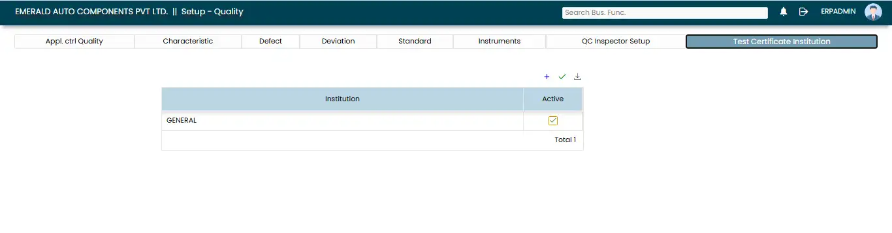

<div data-category="Quality control Management" data-title="Test certificate Institution" data-updated="December 01, 2025" data-contributors="RoadmapIT" data-breadcrumb="Home,Quality control Management,Test certificate Institution">
  <div class="page-content">
    <p>The Institution for the Test certificates can be defined in this screen.</p>

    <h5>Navigation Path:</h5>
    <p class="fs-6">Quality Control \ Setup \ Setup – Quality</p>
    
    <!-- Add Test Certificate Institution -->
    <h2>Test Certificate Institution:</h2>
    <ul style="list-style-type: none; align-content: center">
      <li class="mouse-icon">
        Click
        <i class="bi bi-plus fs-4 mx-2 text-primary"></i>
        to create.
      </li>
      <li class="mouse-icon">Enter the Institution.</li>
      <li class="mouse-icon">
        Click
        <i class="bi bi-check-lg fs-4 mx-1 text-success"></i>
        to save.
      </li>
    </ul>
  </div>
</div>